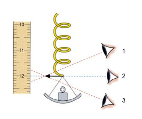
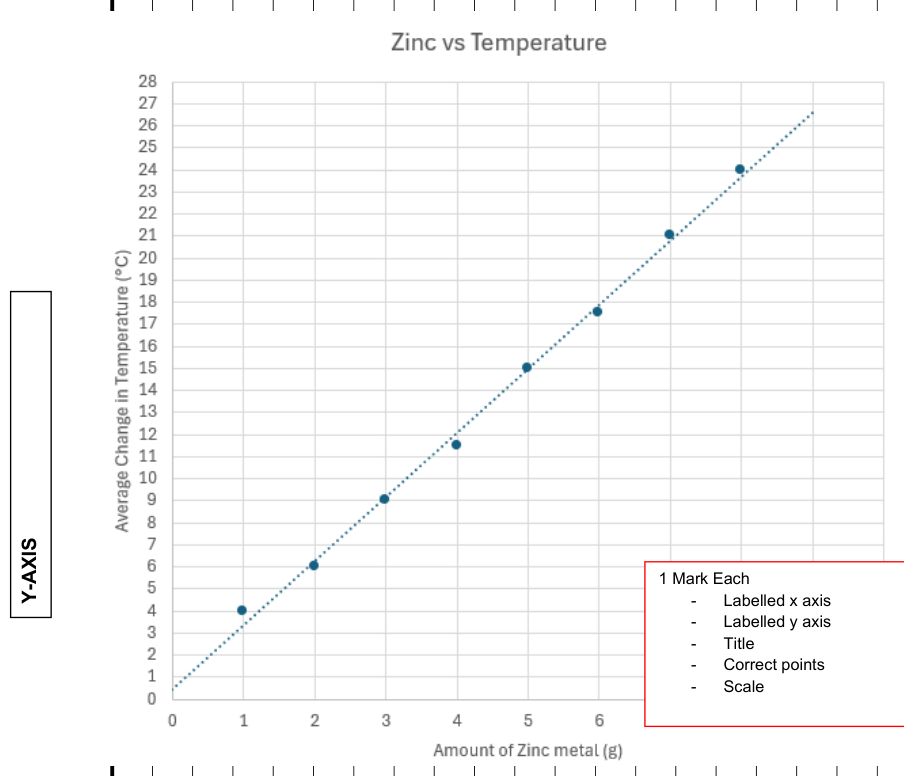
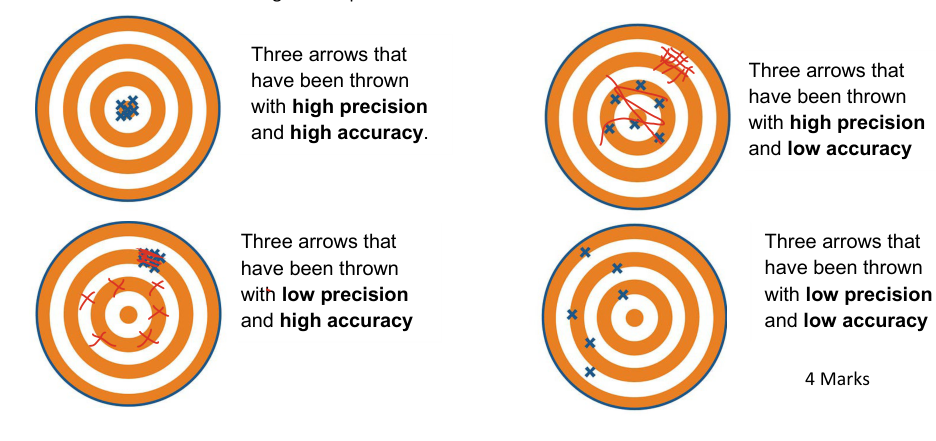

Section A: Multiple choice (12 marks)
All of the following are key steps in the scientific method except:
In an experiment studying the effect of water temperature on plant growth, which is the dependent variable?
The __________ variable is deliberately changed or chosen by the experimenter.
Which of the following is a qualitative observation?
What type of data is recorded when classifying different types of plants?
In an experiment investigating the effect of light intensity on photosynthesis, a controlled variable could be:
Duration of light exposure should also be controlled; type of plant is the answer given in the marking key.
The purpose of repeating trials in an experiment is to:
Which of the following is not part of a well-written hypothesis?
In an experiment measuring the effect of salt concentration on the boiling point of water, the independent variable is:

The diagram shows three positions from which a measurement was made. It was read correctly from position 2. The other positions are examples of:
Use this scenario for Questions 11 and 12. Ravi, Claire, Jordan and Ellie are observing a stream.
A. Ravi said, "The water is flowing quickly."
B. Claire observed, "There are fish swimming against the current."
C. Jordan said, "If the stream flows faster, more fish will swim upstream."
D. Ellie remarked, "The stream looks beautiful in the sunlight."
Whose statement is best described as an observation?
Whose statement is closest to a hypothesis?
Section B: Short answer (28 marks)
Question 1 (20 marks)
A Year 9 student investigated the heat released in the reaction between zinc metal and hydrochloric acid. They wanted to see whether there was a relationship between the amount of zinc placed in the acid and the amount of heat released.
Aim: To investigate whether there is a relationship between the amount of zinc metal reacted with acid and the amount of heat released during this reaction.
- The dependent variable is the .
- The independent variable is the .
What other variables should the student control? List the main controlled variables.
Any of: concentration of the hydrochloric acid; volume of the acid; initial temperature of the reactants; type and purity of the zinc; the reaction vessel; the method of measuring the heat released; the reaction time before measuring.
Write a brief hypothesis for this experiment.
If the amount of zinc metal added to hydrochloric acid increases, then the amount of heat released will also increase, because more zinc reacts with the acid, producing more energy as heat.
Here are the student's results. Work out the average of the trials for each mass to complete the table.
| Amount of zinc (g) | ΔT trial 1 (°C) | ΔT trial 2 (°C) | ΔT trial 3 (°C) | Average ΔT (°C) |
|---|---|---|---|---|
| 1.0 | 3.0 | 5.0 | 4.0 | |
| 2.0 | 4.0 | 8.0 | 6.0 | |
| 3.0 | 8.5 | 9.0 | 9.5 | |
| 4.0 | 12.0 | 11.5 | 11.0 | |
| 5.0 | 15.2 | 14.6 | 15.2 | |
| 6.0 | 17.5 | 17.5 | 17.5 | |
| 7.0 | 20.0 | 21.0 | 22.0 | |
| 8.0 | 23.5 | 24.0 | 24.5 |
What equipment would the student need for this experiment?
For example: a thermometer or temperature probe; a beaker or reaction vessel; a measuring cylinder (for the acid); a balance (to measure the zinc); a stirring rod; safety goggles and gloves.
On graph paper, plot average change in temperature against the amount of zinc metal (with the variables on the correct axes), and draw a line of best fit. Describe your graph, then compare.
1 mark each: labelled x-axis (amount of zinc metal, g); labelled y-axis (average change in temperature, °C); title; correct points; suitable scale; and a straight line of best fit (1 mark).

Reading from the graph:
- the expected average change in temperature if 3.5 g of metal were reacted: about °C
ii. the amount of metal needed for an average temperature change of 26.0 °C: about g
Answers close to 10 °C and 9 g are accepted.
The teacher told the student that if the amount of metal were doubled, the change in temperature would also double.
Using results from the graph, confirm that the teacher's prediction was correct.
At 4.0 g of zinc the average temperature change is 11.5 °C; at 8.0 g (double the amount) it is 24.0 °C. The ratio is about 2 : 1, so doubling the zinc doubles the temperature change.
Write a conclusion for this experiment.
The experiment shows a direct proportional relationship between the amount of zinc metal reacted and the heat released (measured by the change in temperature). The results support the teacher's prediction: doubling the amount of zinc roughly doubles the temperature change, so the heat released depends on the amount of zinc reacted.
Describe (or sketch on paper) where three arrows would land on a target for each situation: (a) high precision and high accuracy; (b) high precision and low accuracy; (c) low precision and high accuracy; (d) low precision and low accuracy.
(a) all three close together in the centre (bullseye);
(b) close together, but away from the centre;
(c) spread out, but evenly around the centre (their average is the centre);
(d) spread out and away from the centre.

Question 3 (4 marks)
Emily and Jordan are planning an experiment to test how temperature affects the activity of an enzyme. They chose catalase, found in potatoes (and liver), which breaks down hydrogen peroxide into water and oxygen. According to references, catalase works best at 35–40 °C. Below this range the reaction slows down because of decreased molecular movement; above it, the enzyme can denature and stop working. One reference noted that pH and substrate concentration also affect the enzyme's activity.
Write a research question that clearly identifies the independent and dependent variables for investigating this relationship.
For example: "How does temperature affect the activity of the enzyme catalase in breaking down hydrogen peroxide?" The IV is temperature (°C); the DV is the enzyme activity, measured by the amount of oxygen produced, the time for the reaction to finish, or the rate of bubbling.
Emily and Jordan plan to test the effect of temperature using liver. They will cut the liver into equal-sized pieces with a scalpel, boil one piece in a beaker of water heated with a Bunsen burner, then put it in a test tube of hydrogen peroxide and measure the bubbles produced, comparing boiled and raw liver.
Give two risks in this experiment, and two actions to reduce the risk of injury.
Risk 1: burns from the Bunsen burner or boiling water. Precaution: use heatproof gloves or tongs when handling the hot beaker, keep the area around the Bunsen burner clear, and don't lean over the flame.
Risk 2: cuts from the scalpel while preparing the liver. Precaution: use a cutting board and hold the scalpel by the handle, cutting away from yourself.
(Hydrogen peroxide can also irritate skin and eyes: wear safety glasses.)